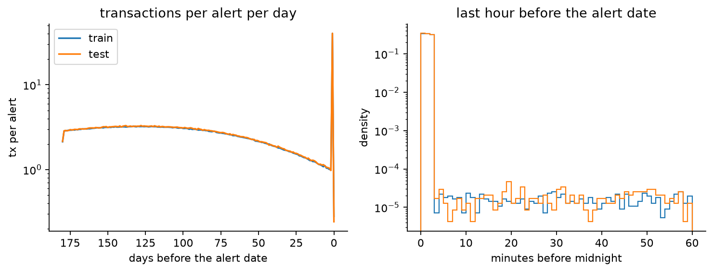
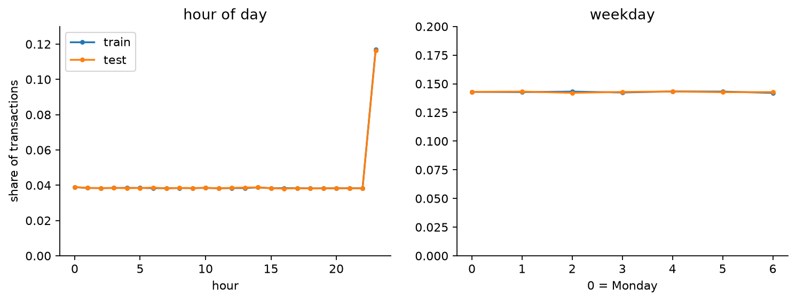
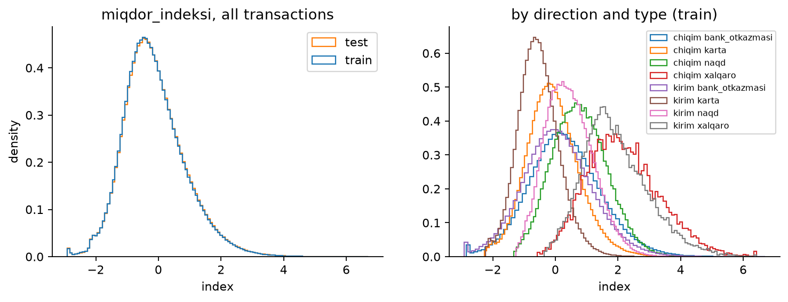

01
What we expected, and what the data said
We began with a textbook plan for alert triage, built on how bank monitoring teams usually reason: validate on a later time period, look for night-time and weekend activity, link alerts that belong to the same customer, flag round amounts, and summarize behavior over generic 1- to 90-day windows. Before building any model, we tested each of these assumptions against the data. Most of them did not survive, and every one that failed changed the plan.
-
01 · Validation
We assumedThe hidden test set is a later period, so validation has to be a time split.
The data showedTest alerts are spread evenly through the same two years: 30% of the alerts in every quarter and in every ID decile belong to the test set, and IDs, file order and dates carry no signal (AUC 0.50 to 0.51).
So weUse stratified, shuffled 5-fold cross-validation on alerts, plus a 20% holdout scored once as a warning check.
-
02 · Customers
We assumedSeveral alerts belong to the same customer, and a customer's earlier alerts are a strong signal.
The data showedNot one of the 10 million transaction rows appears under more than one alert.
So weTreat every alert as an independent history: no grouped folds, no linked-alert features.
-
03 · Leakage
We assumedSome transactions happen after the alert and could leak the analyst's decision.
The data showed0 transactions fall after the alert date, and every history covers the same 180 days before it.
So weKeep one pipeline, with every window measured backwards from the alert date.
-
04 · Clock time
We assumedNight-time and weekend activity are red flags.
The data showedHours 0 to 22 each hold 3.8% of transactions and every weekday holds 14.3%. The one peak, hour 23, is the burst right before the alert.
So weDrop hour-of-day and weekday features, and measure time relative to the alert instead.
-
05 · Time windows
We assumedGeneric 1-, 3-, 7-, 30- and 90-day windows describe recent behavior well enough.
The data showedAbout 8% of all transactions sit in the last few minutes before the alert date begins, on top of a slowly declining 180-day background. Early checks suggest the size of that burst alone separates the classes only weakly.
So weSplit every history into the trigger window and the background, and model the change between them.
-
06 · Trigger boundary
We assumedThe trigger is simply the last calendar day before the alert.
The data showedIn 7,200 of 14,000 alerts that day also holds ordinary transactions, which stretches the median burst from 2.8 to 135 minutes.
So weMeasure timing features, such as compression and the silence before the burst, on the last hour only.
-
07 · Amount scale
We assumedThe amount index is standardized within each alert, or
exp(index)gives back money.The data showedPer-alert means spread with a standard deviation of 0.49, so it is one global scale, and each payment channel is its own shifted bell curve. The exact transform is unknown.
So weJudge amounts against their own channel, and keep
exp(index)only as an experimental feature. -
08 · Round amounts
We assumedStructuring shows up as repeated round amounts.
The data showedOnly 4 values repeat exactly among seven million training rows, and each is the cap of one transaction type.
So weDescribe structuring by similar cash deposits with a low spread, not by identical ones.
What survived these checks became the approach below. The sections after it show the evidence behind each change.
02
Approach
Every alert in the data has already passed a monitoring rule, so the dismissed alerts are near misses, not ordinary customers. The label is an analyst's decision. It reflects what the rule saw, how that compares with the customer's usual behavior, and human factors such as workload. Our goal is to rank the alert queue so that the alerts most likely to be escalated come first. The score is ROC-AUC on a hidden test set, and each team submits once.
- Audit first. Before looking at the target, check integrity, how the test set was drawn, and anything that could leak the label.
- Fix validation once. The labeled alerts are split 80 / 20, stratified on the label. Every decision uses the same 5-fold cross-validation on the 80% development set. The 20% holdout is scored once, after features, models and blend are frozen, as a warning check. The final model is then refit on all 14,000 labeled alerts.
- Explore behavior on the development set. Each history is split into the customer's background and the trigger window just before the alert, and escalated and dismissed alerts are compared on both.
- Turn observations into features. Each idea becomes a feature family. A family stays only if cross-validated AUC improves on average and on at least 4 of 5 folds.
- Model. Gradient-boosted trees (LightGBM and CatBoost), blended by rank average, since AUC depends only on the order of the scores.
03
Dataset
Each set has two tables. The signals table holds one row per alert: its ID, the alert date and, in training, the label. The transactions table holds each alert's history, one row per transaction, with a timestamp, a direction, a type and a standardized amount index. There is no customer ID, no account balance, no counterparty and no information about which rule fired.
| Train | Test | |
|---|---|---|
| Alerts | 14,000 | 6,000 |
| Transactions | 6,987,663 | 3,027,575 |
| Alert dates | Jan 2025 – Dec 2026 | Jan 2025 – Dec 2026 |
| Transactions per alert, median | 461 | 460.5 |
| Transactions per alert, 99th percentile | 1,350 | 1,361 |
| History before the alert date | 180 days | 180 days |
| Escalated | 2,405 (17.2%) | hidden |
Columns
| Table | Column | Meaning |
|---|---|---|
| signals | signal_id | alert ID, one row per alert |
| signals | signal_sanasi | alert date (day precision) |
| signals | eskalatsiya | target: 1 = escalated, 0 = dismissed (training only) |
| transactions | tranzaksiya_vaqti | timestamp, second precision |
| transactions | kirim_chiqim | direction: kirim = incoming, chiqim = outgoing |
| transactions | tranzaksiya_turi | type: karta = card, bank_otkazmasi = bank transfer, naqd = cash, xalqaro = international |
| transactions | miqdor_indeksi | standardized transaction-size index; the exact transform is unknown |
Transaction mix
Share of all training transactions by direction and type.
| Card | Bank transfer | Cash | International | All | |
|---|---|---|---|---|---|
| Incoming | 41.3% | 29.3% | 4.8% | 0.35% | 75.7% |
| Outgoing | 12.5% | 10.2% | 1.6% | 0.11% | 24.3% |
| All | 53.8% | 39.4% | 6.3% | 0.46% | 100% |
Card payments and bank transfers make up 93% of all transactions, cash 6% and international transfers under half a percent. Train and test shares agree within 0.2 percentage points. International activity is sparse within a single alert, so it is best described by counts and flags rather than distributions.
Data quality
Before trusting any pattern, we checked the data itself:
- No missing values, no duplicate alert IDs and no exact duplicate transaction rows.
- Every alert has transactions, and every transaction belongs to a known alert.
- Alert IDs, file order and alert dates carry no information about the label (AUC 0.50 to 0.51).
- No transaction appears under two alerts, so every alert is an independent history and there is no prior-alert history to recover.
- The test set is a random 30% of alerts. Every ID decile and every quarter holds about 30% test alerts, and train and test cover the same two years, so cross-validation on shuffled, stratified folds faces the same task as the hidden test.
04
What the transaction history looks like
With the data checked, the next question was what the months before an alert look like. Three views changed our plan the most.
Months of background, then a burst
Every history covers the same 180 days before the alert date, and nothing is recorded after it. Background activity forms a slow hump: about 2 transactions per alert per day six months out, a peak of about 3 around four months out, then a steady decline to about 1 per day in the final week. In the last minutes before the alert date begins, activity jumps to about 40 transactions.

The burst is dense: its median transaction lands 1.5 minutes before midnight and 99% fall within 3 minutes. Inside it, 17% of rows share the exact second with another transaction of the same alert, against 0.04% everywhere else. 152 alerts (1%) have no burst, and 21 carry it just after midnight on the alert date itself.
We read the burst as the activity that triggered the rule, the trigger window, and the months before it as the customer's background. An analyst asks how different the trigger is from the customer's normal, so our features describe both, and above all the change between them.
No daily or weekly rhythm
Hours 0 to 22 each hold 3.8% of transactions and every weekday holds 14.3%: the timestamps carry no daily or weekly pattern. Hour 23 holds 11.7%, three times any other hour, but that is the pre-alert burst, not night-time behavior.

Clock time is not informative here, so we build no hour-of-day or weekday features. Time only matters relative to the alert: how long before it, how dense, how fast.
Amounts: one scale, shifted by channel
The amount index is close to a normal distribution (mean −0.13, standard deviation 0.98) with a mild right tail and a hard floor at −2.91. It is one scale for all transactions, not standardized within each alert, so size differences between alerts survive. Within every direction and type the index is again bell-shaped, only shifted: card is lowest, then bank transfer, then cash, and international sits about two units higher. Outgoing is above incoming in every channel.

miqdor_indeksi. Left: all transactions, train and test. Right: by direction and type (training set). Each channel is a shifted bell curve.Only four values repeat exactly among seven million rows, and each is the maximum of one transaction type. Amounts are capped per type, and there is no sign of round-amount heaping. The shape fits a transformed log-amount, but the exact transform is unknown, so we treat exp(index) only as an experimental feature and do not read it as money.
A single global threshold would mostly flag international transfers. "Large" has to be judged within each channel, for example as the share of transactions above that channel's own 95th percentile.
05
Target and behavior
Only once the structure of the histories was clear did we turn to the label.
Target distribution
Dismissed 82.8% Escalated 17.2%
2,405 of the 14,000 training alerts were escalated, about one for every 4.8 dismissed. That is imbalanced but not rare. AUC depends only on ranking, so we don't resample; instead every split is stratified on the label.
Escalation rate over time, alerts per week in train and test, and the comparisons between escalated and dismissed alerts: background activity, the trigger window against the background, incoming vs outgoing behavior, channel mix, channel-relative amounts and burst compression. All class comparisons use the development set only, never the holdout.
06
From EDA to features
Each observation above changed a modeling decision.
| What we saw | What we do |
|---|---|
| The test set is a random 30% of alerts over the same two years | Stratified, shuffled K-fold cross-validation instead of a time split |
| No transaction is shared between alerts | Treat every alert as independent: no grouped folds, no linked-alert features |
| Fixed 180-day history, nothing after the alert date | One pipeline, with every window measured backwards from the alert date |
| A dense burst right before every alert | Split each history into background (2 or more days before) and trigger window (the last day), and describe both and the change between them |
| The burst lasts about 3 minutes, while the day before also holds ordinary transactions | Measure timing features (compression, silence before the burst) on the last hour only |
| No daily or weekly rhythm | No hour-of-day or weekday features |
| Each payment channel sits at its own amount level | Channel-relative thresholds and deviations per direction and type |
| Only per-type caps repeat, with no round amounts | No round-amount or exact-repeat features; structuring is described by similar cash deposits (low spread) |
| The index is centred near zero | Spread measured by standard deviation and interquartile range, not the coefficient of variation |
| IDs, file order and dates carry no signal | Never used as features |
Feature families under test
- Standard windows Counts and amount statistics for the trigger window and for 7-, 30-, 90- and 180-day background windows, split by direction and type.
- Trigger vs background The trigger's transaction rate relative to the background daily rate, and the change in cash, international and outgoing share and in amount level.
- Channel-relative amounts Counts and shares above each channel's own 95th and 99th percentile, and deviation from the channel mean.
- Flow and pass-through How quickly money leaves after it arrives, the incoming-to-outgoing ratio, and the spread of cash deposits.
- Burst compression Same-second share, transactions per minute and gaps inside the burst.
- Rhythm and sequences Gaps in the background, silence before the burst, and transitions between direction-and-type states.
A hypothesis is not a feature until cross-validation agrees. Early checks suggest that the raw size of the burst separates escalated from dismissed alerts only weakly, so the main hypothesis is the change from the customer's own background.
Which feature families improved cross-validated AUC (ablation), the strongest single features, and a train-vs-test drift check.
07
Conclusion
Findings so far
- The data is clean, and the test set is a random sample of alerts, so stratified cross-validation mirrors the hidden test.
- Every alert follows the same pattern: 180 days of slowly declining background activity, then a dense burst of transactions in the minutes before the alert date.
- Clock time carries no signal. Time only matters relative to the alert.
- Amounts share one scale, but each payment channel sits at a different level, so "large" has to be judged within the channel.
Final results: cross-validated and holdout AUC, what drives the model, and how many escalations an analyst catches by reviewing the queue in model order.